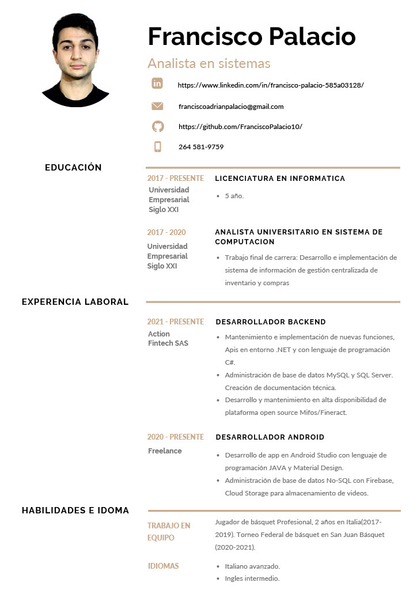

PRACTICA PROFESIONAL
1
PRACTICA PROFESIONAL
2
PRESENTANCIÓN
2.1
Cúrriculum
2.2
Carta de presentación
2.3
Perfil de LinkedIn
2.4
Video de presentación
3
INTRODUCCIÓN
3.1
Presentación de la organización
3.1.1
Reseña histórica
3.1.2
Vision
3.1.3
Valores
3.1.4
Actvidad
3.1.5
Organigrama
3.1.6
Clientes
3.1.7
Análisis del sector de la empresa
3.2
Descripción del tema
3.3
Objetivo del trabajo
4
DISEÑO METODOLÓGICO
4.1
Recolección de información
4.2
Paquetes a utilizar en R
5
DESARROLLO
5.1
Diagnóstico
5.1.1
Situación organizacional actual.
5.1.2
Problematica
5.1.3
Fundamento
5.2
Propuesta profesional
5.2.1
Objetivo General
5.2.2
Objetivos Específicos
5.2.3
Límites y alcances
5.2.4
Recursos
5.2.5
Diagrama de Gantt
6
PROCESAMIENTO DE DATOS
6.1
Comprensión de los datos
6.1.1
Obtención de datos
6.1.2
Analisis de datos
6.2
Limpieza de datos
6.2.1
Eliminar datos repetidos y Nulos
6.3
Transformación de datos
6.3.1
Redefinir Tipo De Datos
6.3.2
Remplazar valores NA o Nulos (Imputación)
2
PRESENTANCIÓN
2.1
Cúrriculum

Descargar Curriculum en pdf
2.2
Carta de presentación
Descargar Carta de Presentacion en pdf
2.3
Perfil de LinkedIn
FRANCISCO PALACIO LINKEDIN
2.4
Video de presentación
Video Curriculum FRANCISCO PALACIO LINKEDIN